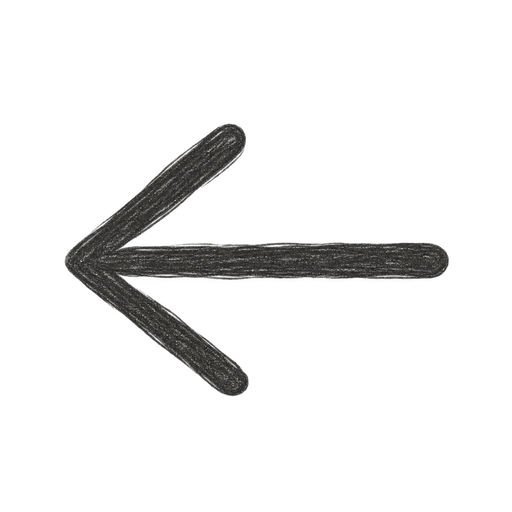

BackInfo
Created by
Alexa Field
Weather data
Weather data by Open-Meteo.com, licensed under CC BY 4.0. Place search also uses Open-Meteo. The app shows today and the next 7 days, in °F. Values are used as provided; the app only rounds temperatures to whole degrees.
How recommendations work
The outfit comes from the day's temperature: today's current temperature, or the daily high for a future day.
- Cold: 44°F or below
- Cool: 45–59°F
- Mild: 60–74°F
- Hot: 75°F or above
Reminders appear when conditions call for them:
- Umbrella: chance of precipitation of 40% or more
- Sunscreen: UV index of 3 or more
- Hydration: feels-like temperature of 90°F or more
The hydration reminder uses Open-Meteo's feels-like (apparent) temperature as a stand-in for the National Weather Service heat index, which Open-Meteo doesn't provide. These ranges are general guidelines and don't account for how warm or cold you run.
Privacy
Your most recent location is saved on this device only, along with the outfit and wording choices for the days you've viewed. It is never sent to a server of ours, because there isn't one. To get weather, the place you search for or your coordinates are sent to Open-Meteo. Your device location is requested only when you tap "Use my location".
Art credits
The character, outfits, and icons are AI-generated with ChatGPT (OpenAI). They are not human-drawn illustrations.
Handwriting font: Patrick Hand by Patrick Wagesreiter, from Google Fonts, under the SIL Open Font License.